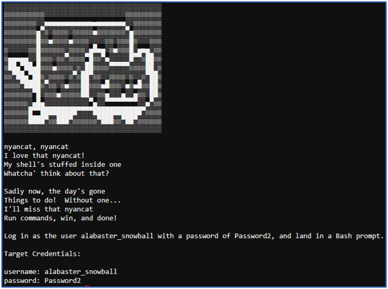

Nyanshell¶
Challenge¶
The initial dialog with Alabaster Snowball:
Alabaster Snowball Welcome to the Speaker UNpreparedness Room! My name's Alabaster Snowball and I could use a hand. I'm trying to log into this terminal, but something's gone horribly wrong. Every time I try to log in, I get accosted with ... a hatted cat and a toaster pastry? I thought my shell was Bash, not flying feline. When I try to overwrite it with something else, I get permission errors. Have you heard any chatter about immutable files? And what is sudo -l telling me?
The hint from our badge:
User's Shells From: Alabaster Snowball On Linux, a user's shell is determined by the contents of /etc/passwd
Chatter? From: Alabaster Snowball sudo -l says I can run a command as root. What does it do?
The banner page from the terminal challenge:
Solution¶
Log in as the user alabaster_snowball with a password of Password2, and land in a Bash prompt.
We used the whoami command to confirm that our username was elf
We then used the following command to determine what our shell was:
cat /etc/passwd
The output was as follows:
root:x:0:0:root:/root:/bin/bash
daemon:x:1:1:daemon:/usr/sbin:/usr/sbin/nologin
bin:x:2:2:bin:/bin:/usr/sbin/nologin
sys:x:3:3:sys:/dev:/usr/sbin/nologin
sync:x:4:65534:sync:/bin:/bin/sync
games:x:5:60:games:/usr/games:/usr/sbin/nologin
man:x:6:12:man:/var/cache/man:/usr/sbin/nologin
lp:x:7:7:lp:/var/spool/lpd:/usr/sbin/nologin
mail:x:8:8:mail:/var/mail:/usr/sbin/nologin
news:x:9:9:news:/var/spool/news:/usr/sbin/nologin
uucp:x:10:10:uucp:/var/spool/uucp:/usr/sbin/nologin
proxy:x:13:13:proxy:/bin:/usr/sbin/nologin
www-data:x:33:33:www-data:/var/www:/usr/sbin/nologin
backup:x:34:34:backup:/var/backups:/usr/sbin/nologin
list:x:38:38:Mailing List Manager:/var/list:/usr/sbin/nologin
irc:x:39:39:ircd:/var/run/ircd:/usr/sbin/nologin
gnats:x:41:41:Gnats Bug-Reporting System (admin):/var/lib/gnats:/usr/sbin/nologin
nobody:x:65534:65534:nobody:/nonexistent:/usr/sbin/nologin
_apt:x:100:65534::/nonexistent:/usr/sbin/nologin
elf:x:1000:1000::/home/elf:/bin/bash
alabaster_snowball:x:1001:1001::/home/alabaster_snowball:/bin/nsh
This shows that our shell is /bin/bash.
However, the shell for alabaster_snowball is /bin/nsh.
If we had root access, we could easily modify the passwd file. However, the elf user does not have this level of access.
If we enter sudo -l we get the following output:
Matching Defaults entries for elf on 882fd6fb9ad0:
env_reset, mail_badpass, secure_path=/usr/local/sbin\:/usr/local/bin\:/usr/sbin\:/usr/bin\:/sbin\:/bin
User elf may run the following commands on 882fd6fb9ad0:
(root) NOPASSWD: /usr/bin/chattr
The only command that elf can run as root is chattr (change attributes).
We then started looking at /bin/nsh. Getting inspiration from the chattr command, we tried it’s counterpart lsattr (list attributes) using lsattr /bin/nsh. We obtained the following output:
----i---------e---- /bin/nsh
The i flag means that /bin/nsh is immutable (the file cannot be modified).
We then used the following command to remove the immutable attribute from /bin/nsh:
sudo chattr -i /bin/nsh
We then tried to copy /bin/bash to /bin/nsh using the following command:
cp /bin/bash /bin/nsh
This worked!
We then tried to switch the user to alabaster_snowball using the following command:
su - alabaster_snowball
We enter the correct password an received the following message:
Loading, please wait......
You did it! Congratulations!
An unusual alternative to copying /bin/bash to /bin/nsh¶
For a bit of fun we did the following:
Edit /bin/nsh using vi
Delete everything using dG
Add the following:
#!/bin/sh /bin/bash
Save and quit vi
Switch the user to alabaster_snowball
Hints¶
Alabaster Snowball provides the following hint in his dialog after solving the terminal challenge:
Alabaster Snowball Who would do such a thing?? Well, it IS a good looking cat. Have you heard about the Frido Sleigh contest? There are some serious prizes up for grabs. The content is strictly for elves. Only elves can pass the CAPTEHA challenge required to enter. I heard there was a talk at KCII about using machine learning to defeat challenges like this. I don't think anything could ever beat an elf though!
The following hint was unlocked in our badge:
Machine Learning From: Alabaster Snowball Machine Learning Use Cases for Cyber Security